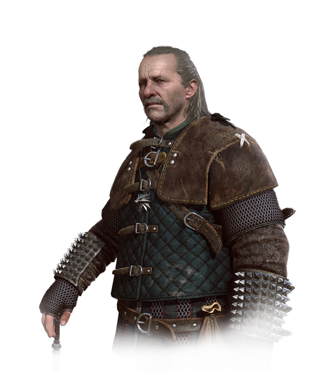

Co to za strona??
Ta strona jest w całości poświęcona uniwersum Widźmińskiemu.
Autorem tego świata jest pisarz Andrzej
SAPKOWSKI.
To spod jego pióra wyszła saga 8 książek o Wiedźminie Geralcie z Rivii.
Jeżeli chcesz
poznać ten piękny świat zostań z nami :)
Posłuchaj SoundTracku z Gry Wiedźmin 3 Dziki Gon - "Kaer Morhen"

"Zaprawdę, nie masz nic wstrętniejszego ponad monstra owe, naturze przeciwne, wiedźminami zwane, bo są
to
płody
plugawego czarostwa i diabelstwa. Są to łotry bez cnoty, sumienia i skrupułu, istne stwory piekielne, do
zabijania jedynie zdatne. Nie masz dla takich jak oni między ludźmi poczciwymi miejsca. A owo Kaer
Morhen,
gdzie
ci bezecni się gnieżdżą, gdzie ohydnych swych praktyk dokonują, starte być musi z powierzchni ziemi, a
ślad
po
nim solą i saletrą posypany."
Kim jest Wiedźmin??
"Zaprawdę, nie masz nic wstrętniejszego ponad monstra owe, naturze przeciwne, wiedźminami zwane, bo są
to
płody
plugawego czarostwa i diabelstwa. Są to łotry bez cnoty, sumienia i skrupułu, istne stwory piekielne, do
zabijania jedynie zdatne. Nie masz dla takich jak oni między ludźmi poczciwymi miejsca. A owo Kaer
Morhen,
gdzie
ci bezecni się gnieżdżą, gdzie ohydnych swych praktyk dokonują, starte być musi z powierzchni ziemi, a
ślad
po
nim solą i saletrą posypany." "Monstrum, albo widźmina opisanie"(fragment) Anonim
Wiedźmin - to osoba, która trudni się zbajaniem potowrów za pieniądze.
Droga do zostania wiedźminem nie była łatwa, szybka czy bezbolesna. Adeptami szkół wiedźmińskich
zostawali młodzichłopcy zabierani od rodziców z róznych przyczyn. W tych szkołach byli oni
przygotowaywani do zabijaniza pomocą morderczych treningów, prób i mutacji. Ze względu na
trudnośc i szkodlwość wyżej wymienichy etapów szkołe kńczył średnio 1/3 chłopców. Podstwawoym
wyposażaniem pełnoprawnego wiedźmina były Miecz Stalowy i Miecz Srebny. Używali oni, także
znaków magicznych. Istniało wiele cechów i szkół wiedźmińskich np. Wilka, Gryfa, Kota itd. Zawód
ten pod koniec średniowiecza całkiem wymarł.
Wiedźmin - to osoba, która trudni się zbajaniem potowrów za pieniądze.
Droga do zostania wiedźminem nie była łatwa, szybka czy bezbolesna. Adeptami szkół wiedźmińskich
zostawali młodzichłopcy zabierani od rodziców z róznych przyczyn. W tych szkołach byli oni
przygotowaywani do zabijaniza pomocą morderczych treningów, prób i mutacji. Ze względu na
trudnośc i szkodlwość wyżej wymienichy etapów szkołe kńczył średnio 1/3 chłopców. Podstwawoym
wyposażaniem pełnoprawnego wiedźmina były Miecz Stalowy i Miecz Srebny. Używali oni, także
znaków magicznych. Istniało wiele cechów i szkół wiedźmińskich np. Wilka, Gryfa, Kota itd. Zawód
ten pod koniec średniowiecza całkiem wymarł.
Geralt z Rivii
 Geralt z Rivii przez driady i elfy
nazywany Gwynbleidd - Biały Wilk , znany również jako Rzeźnik z Blaviken - Niezwykle
sławny Wiedźmin, tytułowy bohater książek i gier komputerowych, legenda i bohater Północnych Królestw
mający talent do mieszania się w różne często brudne i nieinteresujące go spraw, narzeczony Yennefer i
przybrany ojciec Ciri, przybrany syn Nenneke.
Geralt z Rivii przez driady i elfy
nazywany Gwynbleidd - Biały Wilk , znany również jako Rzeźnik z Blaviken - Niezwykle
sławny Wiedźmin, tytułowy bohater książek i gier komputerowych, legenda i bohater Północnych Królestw
mający talent do mieszania się w różne często brudne i nieinteresujące go spraw, narzeczony Yennefer i
przybrany ojciec Ciri, przybrany syn Nenneke. Geralt jest synem czarodziejki Visenny i(najprawdopodobniej) wojownika Korina. Krótko po narodzinach został on oddany przez matkę do wiedźmińskiej Szkoły Wilka w twierdzy Kaer Morhen. W trakcie szkolenia na kami do dodatkowycheksperymentów, które przeżył jako jedyny. Wynikiem tych działań jest brak pigmentu w jego włosach oraz ich mlecznobiały kolor. W efekcie mutacji i treningów zyskał m.in. zwiększony refleks i prędkość, wolniejsze tętno oraz zdolność adaptacji źrenicy do aktualnego oświetlenia. Jego preceptorem mistrzem i mentorem był Vesemir , nauczyciel szermierki i znawca potworów, to on większości nauczył Wilka wszystkiego, co sam umiał i stał się dla niego bardzo bliski, zastępując Geraltowi ojca. Z czasów szkolenia miał towarzysza i przyjaciela Eskela oraz prawdopodobnie Lamberta. Po ukończeniu wiedźmińskiego szkolenia rozpoczął swoją przygodę ze światem, wraz ze swoim koniem - Płotką, by zostać płatnym zabójcą potworów. Nie wiadomo, czy Geralt ukończył szkolenie na krótko przed atakiem na Kaer Morhen, czy też po nim. Jak sam Geralt wspomina, początek jego szlaku zaczął się od wmieszania się w ludzkie sprawy i zapoznaniem się z prawdziwym i okrutnym życiem. Jego pierwszym potworem spotkanym na szlaku był... człowiek, a konkretnie grupa bandytów, która napadła podróżującego kupca i jego córkę. Geralt chcąc odegrać rolę bohatera widowiskowo zabił jednego z maruderów, reszta natomiast na sam widok uciekła w popłochu. Nie spotkał się jednak z oczekiwaną reakcją; przerażony kupiec uciekł razem z oprawcami, a jego zalana łzami córka zemdlała ze strachu. Późniejsze doświadczenia, oraz nastawienie ludzi do wiedźmina sprawiły, że stał się on dość pesymistyczny i nabył obojętnego stosunku do świata. W następnych latach Geralt zdobywał renomę podróżując po Królestwach Północy, jednak najczęściej na zimowanie wracał w Góry Sine. Późniejsze przygody i czyny wiedźmina miałyrozsławić go na cały świat. Na mocy prawa niespodzianki Geralt owiązał się przeznaczeniem z Ciri - tajemniczym dzieckiem, Lwiątkiem z Cintry. Ich przygody, a także wielu innych napotkanych przez nich postaci, mają miejsce w czasie wielkiej inwazji Cesarstwa Nilfgaardu na Królestwa Północne. Poza trudnościami jakie napotyka na swojej drodze, wiążąc się z czarodziejką Yennefer, Geralt bierze udział w bezwzględnej grze wywiadów wojskowych. Chcąc dbać o swoich bliskich, wiedźmin stara się chronić ich, jednak nadal na przekór wszystkim zachowaćneutralność w ogarniętym wojną świecie.
Najlepszym przyjacielem wiedźmina Geralta jest bard Jaskier, miłością jego życia jest Yennefer z Vengerbergu, a dzieckiem (przybranym) Ciri.
Geralt to dobrze zbudowany mężczyzna o kocich oczach i białych włosach, które są rezultatem mutacji jakie przeszedł dołączając do grona wiedźminów. Miały one również wpływ na jego wytrzymałość, czyniąc go nie tylko szybszym i sprawniejszym, lecz również odpornym na choroby, trucizny oraz uroki. Na szyi nosi naszyjnik z wilkiem, symbolem jego szkoły wiedźmińskiej. Jest znakomitym wojownikiem, znawcą różnych stylów walki. Zawsze nosi przy sobie dwa egzemplarze mieczy: żelazny na potwory bardziej popularne i stanowiące mniejsze zagrożenie, a także srebrny na najsilniejsze kreatury. Posiada wiedzę na temat alchemii i rodzajów roślin, potrafi ważyć mikstury na podstawie starych, wiedźmińskich receptur w tym pozwalający na znakomite widzenie w ciemności Kot czy leczącą Jaskółkę. Jest atrakcyjny dla kobiet, o czym mogą świadczyć jego liczne romanse. Stara się zgodnie z wiedźmińskimi zasadami zachować neutralność, często zdarza mu się jednak mieszać w polityczne konflikty . Wiedźmini zazwyczaj są pozbawieni uczuć, szkoleni na maszyny do zabijania , Geralt jest jednak inny, potrafi kochać , troszczyć się o bliskich , posiada ludzkie uczucia. Sławę przyniosła mu głośna sprawa z odczarowaniem córki króla Foltesta, która była zaklęta w strzygę. Od tamtej pory wiedźmin stał się głównym bohaterem wielu ballad (których najwięcej dostarczał jego przyjaciel Jaskier) oraz opowieści snutych przy ogniskach. Do jego najgłośniejszych przygód należą: uratowanie złotego smoka Villentretenmertha, pokonanie bandy morderców na rynku w Blaviken (stąd wywodzi się jeden z jego przydomków), uratowanie dworu w Cintrze przed masakrą i uratowanie miasta Rinde przed zniszczeniem przez olbrzymiego dżinna. W przerwie między zabijaniem potworów Geralt oddawał się zwykłym ludzkim uciechom, takim jak picie piwa , gra w kości , walka na pięści oraz chędożenie. Do tego ostatniego miał szczególną słabość, zwłaszcza jeśli chodzi o czarodziejki. Słynna jest historia jego burzliwej miłości z czarodziejką Yennefer, którą poznał w trakcie wspomnianego incydentu w Rinde. Związek ten nie należał do najłatwiejszych na oboje zainteresowanych i mimo wielu kłótni oraz rozstań, które mogłyby wydawać się ostatecznymi, prędzej czy później odradzał się na nowo. Nigdy nie udaje mu się zachować pełnej neutralności, gdyż mutacja nie wytrzebiła z niego wszystkich ludzkich uczuć. Mimo groźnej gęby i pozornego braku skrupułów Geralt nigdy nie odmawia prośbom o pomoc, przez co zazwyczaj ląduje w lochu lub u medyka. Po wydarzeniach z Dzikiego Gonu oraz dodatku Krew i Wino Geralt na stałe i odwiesił miecze na kołek i ożenił się że swoją ukochaną. Po pokonaniu Dzikiego Gonu i Białego Zimna spędza leniwe dni w ramionach ukochanej w spokoju i samotności z dala od polityki , intryg , niebezpieczeństw świata. Obecnie mieszka ze swoją ukochaną na południu w Księstwie Toussaint w winnicy Corvo Bianco.
" - Cholera. Co tam jest, zobacz, Milva?
Łuczniczka przyjrzała się uważnie i krytycznie.
- Tylko ucho ci urwało - stwierdziła wreszcie. - Nie ma się czym przejmować.
- Łatwo ci mówić. Ja bardzo lubiłem to ucho. "
Rozmowa Geralta z Milvą
Główni Bohaterowie
| Zdjęcie | Imię | Profesja | Występowanie | Wygląd & Cechy |
| Geralt z Rivii Rzeźnik z Blaviken Gwynbleidd - Biały Wilk |
Wiedźmin ze szkoły Wilka | Kaer Morhen Królestwa Północy Nilfgaard Toussaint |
Siwe włosy Kocie oczy Dwa miecze na plecach Medailon wilka |
|
 |
Yennefer z Vengerbergu Yen Yenna |
Czarodziejka | Vengerberg Królestwa Północy Nilfgaard Toussaint |
Kruczoczarne włosy Fiołkowe oczy Ubrania tylko czarno-białe Naszynjik z gwiazdą |
| Cillira Fiona Elen Riannon Ciri Zierael (Jaskółka) |
Wiedźminka, Pani czasów i Miejsc |
Wszytskie światy Królestwa Północy Nilfgaard Każde miejsce |
Popielate włosy Szmaragdowe oczy Dwa miecze - Zireael |
|
| Triss Merigold Czternasta ze wzgórza Nieulękła |
Czarodziejka | Kowir Królestwa Północy Nilfgaard Maribor |
Kasztanowee włosy Niebieskie oczy Uczulona na Eliksiry |
|
| Vesemir Wujek Vesemir Papa Vesemir |
Wiedźmin ze szkoły Wilka | Kaer Morhen Królestwa Północy |
Siwe włosy Żółte oczy Dwa miecze na plecach Medailon wilka |
|
Zobacz Wiedźmiński Świat na własne oczy!!!